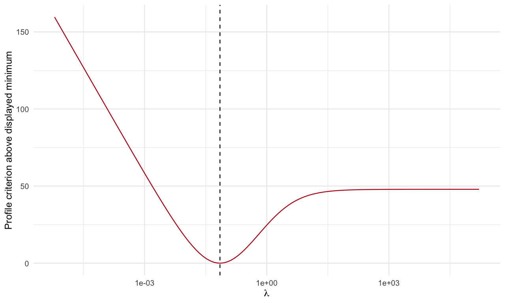
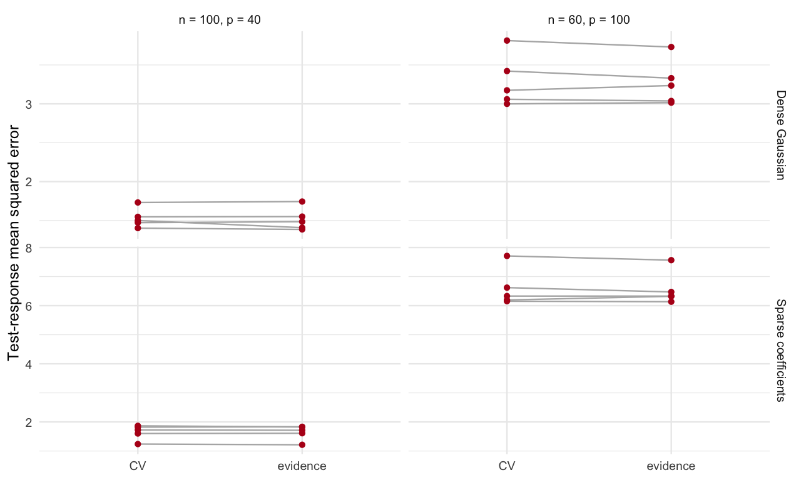

Choosing the ridge penalty by marginal likelihood
Cross-validation selects a penalty by measuring predictive performance on observations omitted from fitting. A probability model offers another route: the coefficient vector can be integrated out, leaving a marginal likelihood for the regularization parameter. This chapter develops that construction explicitly, including the normalization terms that would be lost by treating a penalized residual sum of squares as a likelihood on its own.
We first describe the Gaussian model and derive its marginal likelihood, then explain how the variance and penalty are estimated. The implementation uses a single singular value decomposition to avoid repeating a matrix factorization at every candidate penalty. An independent QR calculation verifies the resulting coefficients. The concluding simulations compare this empirical Bayes procedure with an efficient cross-validation calculation on both tall and wide designs, under a dense Gaussian signal and a sparse signal that departs from the assumed coefficient distribution.
Gaussian marginal likelihood and hyperparameter selection are treated in Rasmussen and Williams (2006), Chapters 2 and 5. For work specifically on fast marginal likelihood selection of ridge parameters using singular values, see Karabatsos (2015). The construction below fixes its own prior and profiles the noise variance; it should not be read as a reproduction of every prior or algorithm in those references.
1 A Gaussian model whose posterior mean is ridge
Let \(X\in\mathbb R^{n\times p}\) be fixed, and suppose \[ y\mid\beta,\sigma^2\sim N_n(X\beta,\sigma^2I_n),\qquad \beta\mid\sigma^2,\lambda\sim N_p\!\left(0,\frac{\sigma^2}{n\lambda}I_p\right), \qquad \lambda>0. \] The prior has the same variance in every coefficient direction. Its meaning consequently depends on the units of the predictors: rescaling a column without transforming the prior changes the model. The examples use predictors generated on a common scale, with a known zero intercept. The package does not insert an intercept or standardize columns automatically.
Set \(\alpha=n\lambda\) and \(A_\alpha=X^\top X+\alpha I_p\). Multiplying the likelihood and prior gives a quadratic exponent proportional to \[
\|y-X\beta\|_2^2+\alpha\|\beta\|_2^2.
\] Completing the square yields \[
\|y-X\beta\|_2^2+\alpha\|\beta\|_2^2
=q_\alpha+(\beta-\widehat\beta_\alpha)^\top A_\alpha
(\beta-\widehat\beta_\alpha),
\] where \[
\widehat\beta_\alpha=A_\alpha^{-1}X^\top y,\qquad
q_\alpha=\|y-X\widehat\beta_\alpha\|_2^2+
\alpha\|\widehat\beta_\alpha\|_2^2.
\] Thus the conditional posterior is \[
\beta\mid y,\sigma^2,\lambda\sim
N_p(\widehat\beta_\alpha,\sigma^2 A_\alpha^{-1}).
\] Its mean and mode coincide with the ridge coefficients for the normalized criterion used by qrridge(). The inverse notation specifies the mathematical result; the numerical calculations below use decompositions and solves.
2 Integrating the coefficients
Integration means evaluating the density of the observed response after averaging over the coefficient prior: \[ p(y\mid\sigma^2,\lambda)= \int_{\mathbb R^p}p(y\mid\beta,\sigma^2) p(\beta\mid\sigma^2,\lambda)\,\mathrm d\beta. \] Using the completed square, the Gaussian integral contributes \((2\pi\sigma^2)^{p/2}|A_\alpha|^{-1/2}\). Combining this factor with the likelihood and prior normalizations gives \[ p(y\mid\sigma^2,\lambda) =(2\pi\sigma^2)^{-n/2}\alpha^{p/2}|A_\alpha|^{-1/2} \exp\!\left(-\frac{q_\alpha}{2\sigma^2}\right). \] The determinant factor matters: it changes when the prior becomes more or less concentrated. Omitting it would not maximize this marginal likelihood.
The same result follows directly from adding independent Gaussian random vectors. Writing \[ C_\lambda=I_n+\frac{XX^\top}{n\lambda}, \] we obtain \[ y\mid\sigma^2,\lambda\sim N_n(0,\sigma^2 C_\lambda). \] The determinant identity and quadratic-form identity are \[ \log|C_\lambda|=\log|A_\alpha|-p\log\alpha, \qquad y^\top C_\lambda^{-1}y=q_\alpha. \] If \(R^\top R=A_\alpha\), the first quantity can also be evaluated as \[ \log|C_\lambda|=2\sum_{j=1}^p\log|R_{jj}|-p\log\alpha. \] This connects the criterion to the augmented QR factors used in the previous chapter. For the quadratic form, evaluating the penalized residual expression is preferable to subtracting the nearly equal quantities \(y^\top y\) and \(y^\top X\widehat\beta_\alpha\) when the fit is very close.
3 Profiling the variance and optimizing the penalty
For a given \(\lambda\), differentiation of the marginal log likelihood with respect to \(\sigma^2\) gives \[ \widehat\sigma^2_\lambda=\frac{q_\alpha}{n}. \] This is the maximum-likelihood estimate under the marginal model. It is not the residual diagnostic based on \(n-p\), nor a correction based on the smoother trace. Inserting it into the negative log likelihood leaves, up to a constant independent of \(\lambda\), \[ F(\lambda)=\frac12\left\{ n\log\!\left(\frac{q_\alpha}{n}\right)+\log|C_\lambda| \right\}. \] We minimize this one-dimensional function and then evaluate the ridge posterior mean at the selected penalty. The coefficients have been integrated out, while \(\sigma^2\) has been profiled and \(\lambda\) estimated. No prior on \(\lambda\) is integrated in this procedure, and no claim of fully Bayesian hyperparameter uncertainty is implied.
Optimization is performed on \(t=\log\lambda\), so every evaluated finite penalty is positive. A coarse grid locates candidate local minima; bounded searches refine their neighboring intervals, and the endpoints are compared explicitly. A finite grid cannot certify a global optimum for every possible response. A returned lower-bound solution calls for inspecting and, where appropriate, extending the search range rather than describing it as an interior optimum.
The implementation also evaluates the limiting model \(\lambda\to\infty\). In that limit the coefficient prior collapses at zero, \(C_\lambda\to I_n\), and the fitted mean is zero. A data set can support this limit. Reporting it explicitly avoids inventing a large but arbitrary finite optimum. At the other extreme, small penalties can produce weakly identified or boundary behavior, especially in saturated or nearly interpolating settings; positivity alone does not guarantee a well-separated interior maximum.
An unknown unpenalized intercept requires an additional treatment of the mean, for example through generalized least-squares profiling or a restricted-likelihood construction with its corresponding adjustment. Simply centering the response and retaining every term of the known-mean likelihood without justification would change the inferential argument. The present implementation uses the explicitly stated known-zero-mean model and does not implement REML.
3.1 The score equation and the conditional smoother trace
The singular values also give an interpretable derivative of the profile criterion. With \(t=\log\lambda\) and \(\alpha=n\exp(t)\), define \[ \dot q_\alpha=\sum_{j=1}^r z_j^2 \frac{\alpha d_j^2}{(d_j^2+\alpha)^2},\qquad d_\alpha=\sum_{j=1}^r\frac{d_j^2}{d_j^2+\alpha}. \] Differentiating the profile criterion gives \[ \frac{\mathrm d F}{\mathrm d t} =\frac12\left(\frac{n\dot q_\alpha}{q_\alpha}-d_\alpha\right). \] Here \(d_\alpha\) is the trace of the ridge smoother at a fixed penalty. An interior empirical Bayes optimum balances these two terms. This identity is useful for checking an optimizer, but it does not justify replacing the marginal-model variance estimate \(q_\alpha/n\) with a residual degrees-of-freedom adjustment. The numerical checks below compare the analytic derivative with a centered finite difference.
4 A single decomposition for the entire objective
Let \(X=UDV^\top\) be an economy singular value decomposition with \(r=\min(n,p)\) columns in \(U\), and write \(z=U^\top y\) and \(y_\perp=y-Uz\). Then \[
\log|C_\lambda|=\sum_{j=1}^r\log\!\left(1+\frac{d_j^2}{\alpha}\right),
\qquad
q_\alpha=\|y_\perp\|_2^2+
\sum_{j=1}^r z_j^2\frac{\alpha}{d_j^2+\alpha}.
\] These formulas remain valid for zero singular values and for \(p>n\). Evaluating the residual component directly avoids obtaining its squared norm by subtraction. The logarithm is computed with log1p(), which preserves accuracy for small arguments. After preparation, evaluating a new penalty uses scalar operations on the stored singular values and projected response rather than a fresh decomposition.
The posterior mean is recovered as \[ \widehat\beta_\alpha=V\,\operatorname{diag} \!\left(\frac{d_j}{d_j^2+\alpha}\right)z. \] This is a computational alternative to repeatedly refactorizing the augmented design. The SVD is included in the measured cost of penalty selection below; it is not treated as an available free input.
evidence_X <- evidence_results$demo$X
evidence_y <- evidence_results$demo$y
evidence_fit <- evidence_results$demo$fit
knitr::kable(data.frame(lambda = evidence_fit$lambda,
alpha = evidence_fit$alpha,
sigma2 = evidence_fit$sigma2,
status = evidence_fit$status), digits = 5,
caption = "Empirical Bayes penalty and marginal-model variance estimate for the reproducible example.")| lambda | alpha | sigma2 | status |
|---|---|---|---|
| 0.0709 | 7.08978 | 0.95447 | interior |
# In a new analysis, after sourcing scripts/ridge-evidence.R:
# evidence_fit <- ridge_evidence_fit(X, y)The estimated penalty can be passed directly to the package’s normalized ridge interface when it is finite. The following comparison checks that the posterior mean computed from singular values agrees with the augmented-factor implementation.
if (is.finite(evidence_fit$lambda)) {
evidence_native <- fastQR::qrridge(evidence_y, evidence_X,
evidence_fit$lambda, type = "R")
evidence_native_error <- max(abs(evidence_native$coeff - evidence_fit$coeff))
stopifnot(evidence_native_error < 1e-10)
evidence_native_error
}## [1] 1.94289e-15Figure 6 shows how the profile criterion changes with the penalty. The plotted ordinate subtracts the smallest displayed value for readability; this has no effect on the estimated minimum. A nearly flat region indicates that noticeably different penalties can have similar marginal support.
evidence_curve <- evidence_fit$curve
evidence_curve$relative_score <- evidence_curve$score - min(evidence_curve$score)
evidence_plot <- ggplot2::ggplot(evidence_curve, ggplot2::aes(lambda, relative_score)) +
ggplot2::geom_line(colour = "#b5121b") + ggplot2::scale_x_log10() +
ggplot2::labs(x = expression(lambda), y = "Profile criterion above displayed minimum") +
ggplot2::theme_minimal(base_size = 11)
if (is.finite(evidence_fit$lambda)) evidence_plot <- evidence_plot +
ggplot2::geom_vline(xintercept = evidence_fit$lambda, linetype = 2)
evidence_plot
Figure 6: Profile negative marginal log likelihood as a function of the normalized ridge penalty, after profiling the noise variance. A vertical line marks the selected penalty when it is finite. The criterion is shifted by a constant for display.
5 Independent numerical checks
The criterion is verified against a direct Cholesky factorization of the response covariance \(C_\lambda\) at several positive penalties. The coefficient calculation is checked against QR of the augmented design with an orthogonally transformed response. A further identity check compares \(q_\alpha\) with the sum of squared residuals and the coefficient penalty. These calculations use different numerical representations of the same model.
evidence_check_table <- evidence_results$checks
evidence_check_table[, -1] <- lapply(evidence_check_table[, -1],
function(x) formatC(x, format = "e", digits = 2))
knitr::kable(evidence_check_table, row.names = FALSE,
caption = "Agreement of the spectral marginal-likelihood calculation with dense-covariance and augmented-QR references.")| lambda | quadratic_error | determinant_error | coefficient_error | derivative_error | penalized_identity_error |
|---|---|---|---|---|---|
| 0.001 | 1.54e-14 | 2.76e-15 | 2.22e-15 | 2.45e-09 | 8.55e-16 |
| 0.100 | 0.00e+00 | 1.59e-16 | 1.80e-15 | 5.66e-10 | 0.00e+00 |
| 2.000 | 5.24e-16 | 2.27e-16 | 6.52e-16 | 3.43e-10 | 7.87e-16 |
6 Comparing marginal likelihood and cross-validation
Both selectors operate on the same training samples and use the same predictor units. The simulation considers \((n,p)=(100,40)\) and \((60,100)\), with independent standard-normal predictors and unit noise variance. In the dense scenario, coefficients are generated independently from \(N(0,4/p)\), which matches the spherical prior structure. In the sparse scenario, three coefficients equal two and the remaining coefficients are zero. The latter intentionally departs from that prior. Five independently seeded training samples are generated for each setting, and each sample has an independent test set of four hundred observations.
For cross-validation, five training folds each receive their own SVD, reused over a common grid of thirty-one penalties from \(10^{-4}\) to \(10^2\). The training criterion uses the actual training size \(n_{\rm train}\lambda\), and the validation errors are averaged across folds. After selection, a full-data decomposition provides the coefficients. The spectral CV calculation is checked against qrridge_cv() using the same fold assignment; its maximum discrepancy is 5.11e-15.
This efficient CV baseline avoids attributing an advantage to marginal likelihood merely because the competing implementation repeats a decomposition at every penalty. Both timing measurements include selection and the final coefficient calculation, with warm-up and three calibrated repetitions. Test-data generation and evaluation are outside the timed regions. The empirical Bayes search is continuous within refined log-penalty intervals, whereas CV selects from a specified finite grid; the two methods also target different statistical criteria.
knitr::kable(evidence_summary, digits = 4, row.names = FALSE,
caption = "Median test-response MSE, mean-prediction MSE and selection time across five simulated training samples per setting. Timings include the necessary decompositions and coefficient recovery.")| n | p | signal | method | test_mse | mean_prediction_mse | selection_ms |
|---|---|---|---|---|---|---|
| 100 | 40 | Dense Gaussian | CV | 1.4999 | 0.6015 | 2.3125 |
| 60 | 100 | Dense Gaussian | CV | 3.1738 | 2.2093 | 3.8750 |
| 100 | 40 | Sparse coefficients | CV | 1.7253 | 0.6749 | 2.3125 |
| 60 | 100 | Sparse coefficients | CV | 6.3302 | 5.2942 | 3.8750 |
| 100 | 40 | Dense Gaussian | evidence | 1.4847 | 0.6030 | 0.6875 |
| 60 | 100 | Dense Gaussian | evidence | 3.2351 | 2.1852 | 0.9375 |
| 100 | 40 | Sparse coefficients | evidence | 1.7136 | 0.6534 | 0.7031 |
| 60 | 100 | Sparse coefficients | evidence | 6.3284 | 5.2918 | 0.9375 |
In these simulations, marginal-likelihood selection is computationally faster: its median selection time is between 3.3 and 4.1 times smaller than that of the efficient five-fold CV implementation, depending on the design and signal scenario. Both costs include the required decompositions and recovery of the selected coefficients. This timing result compares two different selection criteria; it is not evidence that the empirical Bayes selector has uniformly lower predictive error. The paired test-set results below show the predictive comparison separately.
Figure 7 retains the individual simulation results, so the variability hidden by a table of medians remains visible. The test-response error includes irreducible observation noise; the separate mean-prediction error in the table compares predictions with the known conditional mean. The small simulation is illustrative and does not establish that one selector dominates across designs or signal distributions.
evidence_sim_plot <- evidence_results$simulations
evidence_sim_plot$design <- paste0("n = ", evidence_sim_plot$n, ", p = ", evidence_sim_plot$p)
ggplot2::ggplot(evidence_sim_plot,
ggplot2::aes(method, test_mse, group = repetition)) +
ggplot2::geom_line(colour = "grey70") + ggplot2::geom_point(colour = "#b5121b") +
ggplot2::facet_grid(signal ~ design, scales = "free_y") +
ggplot2::labs(x = NULL, y = "Test-response mean squared error") +
ggplot2::theme_minimal(base_size = 11)
Figure 7: Independent-test prediction error for empirical Bayes marginal likelihood and five-fold cross-validation. Each point corresponds to one simulated training sample; lines pair the selectors on the same sample. Panels distinguish design dimensions and coefficient-generating scenarios.
Boundary outcomes are part of the analysis rather than discarded runs. The following table reports the returned search status for every selector and setting. A CV grid-boundary choice or a finite-search-boundary empirical Bayes choice should prompt a check of the candidate range in a substantive analysis.
evidence_status <- aggregate(list(count = rep(1L, nrow(evidence_results$simulations))),
evidence_results$simulations[, c("n", "p", "signal", "method", "boundary")], sum)
knitr::kable(evidence_status, row.names = FALSE,
caption = "Observed selection statuses, including finite search boundaries and the null-model limit.")| n | p | signal | method | boundary | count |
|---|---|---|---|---|---|
| 100 | 40 | Dense Gaussian | CV | interior | 5 |
| 60 | 100 | Dense Gaussian | CV | interior | 5 |
| 100 | 40 | Sparse coefficients | CV | interior | 5 |
| 60 | 100 | Sparse coefficients | CV | interior | 5 |
| 100 | 40 | Dense Gaussian | evidence | interior | 5 |
| 60 | 100 | Dense Gaussian | evidence | interior | 5 |
| 100 | 40 | Sparse coefficients | evidence | interior | 5 |
| 60 | 100 | Sparse coefficients | evidence | interior | 5 |
7 What changes when data or predictors are updated?
The preceding chapter holds a specified penalty fixed while updating a factor. Selecting the penalty again is additional work. A factor for \(X^\top X+\alpha_0I_p\) is not also a factor for \(X^\top X+\alpha I_p\) when \(\alpha\ne\alpha_0\). An update advantage at a fixed penalty consequently cannot be transferred directly to the complete reselected estimator. This chapter uses a reusable spectral representation for the penalty search and the QR-based package interface to verify the selected fit.
Likewise, conditional posterior covariance at estimated hyperparameters omits uncertainty about those hyperparameters. A fully Bayesian analysis would specify and average over their posterior distribution. The fixed-penalty smoother trace also remains a conditional complexity measure: after the penalty is selected from the response, it is not automatically the divergence or degrees of freedom of the complete selected fitting rule. These distinctions keep computational reuse, penalty estimation and uncertainty assessment separate and explicit.